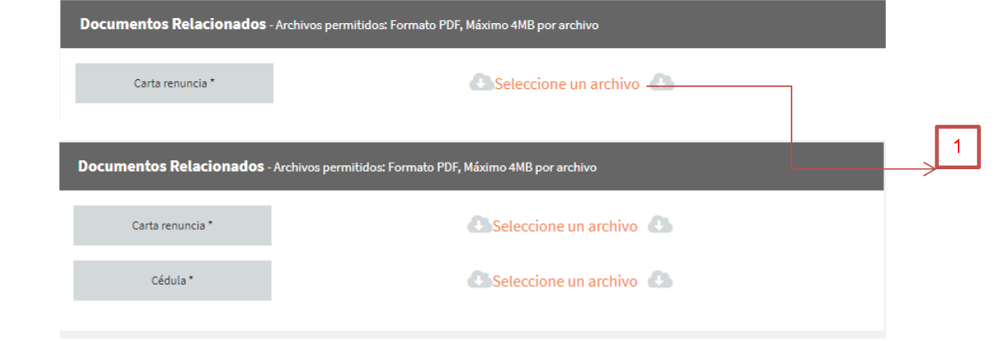

Crear Retiro
Esta ventana corresponde al rol del “Jefe” a continuación veremos la ventana y sus opciones:

Como se puede observar hay varias opciones e interacciones nuevas, cada una de estas interacciones fue enumerada de forma que se muestre como debe ser el flujo de estas, a continuación la explicación de cada una de ellas:
1. Buscar
En esta opción podemos buscar el usuario al cual se le va a hacer el proceso de retiro. Se puede buscar por datos como el usuario de ingreso al computador de oficina, nombre y cedula, una vez estos datos deberá hacer click en el botón identificado con una lupa, una vez hecho el click se mostrará una ventana modal o emergente, en la cual deberá seleccionar la persona que busca. La ventana modal tiene este aspecto:

2. Tipo De Retiro
Está opción muestra el tipo de retiro por el cual se va a iniciar este proceso. Esta opción se habilitará una vez se haya seleccionado la persona a la cual se le va a hacer este proceso.
A continuación se muestran las opciones disponibles para dicho proceso

Al seleccionar algún tipo de retiro se habilitará automáticamente la opción de cargar los archivos soporte para continuar con el proceso. Dependiendo el retiro se habilitará desde un archivo solicitado hasta un máximo de dos:

Cargue de Archivos
1. Selección de archivo: Se debe hacer click, una vez hecho el click se abrirá una ventana emergente para la selección del archivo requerido
Una vez seleccionado el archivo se cargará de forma automática para poder continuar con el proceso de creación 3. Fecha Retomando la pantalla principal en este campo se deberá seleccionar la fecha en las cual se va llevar al cabo el proceso de retiro.

4. Comentario En este apartado se podrá poner un comentario que pueda aportar en el proceso de retiro.
5. Registrar Este botón tiene la función de guardar el retiro que se va a crear, una vez hecho el click aparecerá una ventana modal o emergente solicitando la confirmación de este proceso.

Para guardar el proceso anteriormente hecho debe hacer click en el botón “Si”, de los contrario al botón “No”
6. Cancelar Esta opción tiene la función de cancelar el proceso anteriormente hecho, deberá hacer click en dicho botón, al hacer click aparecerá una ventana modal o emergente la cual va a solicitar la confirmación de este proceso.

Para cancelar el proceso anteriormente hecho debe hacer click en el botón “Si”, de los contrario al botón “No”.